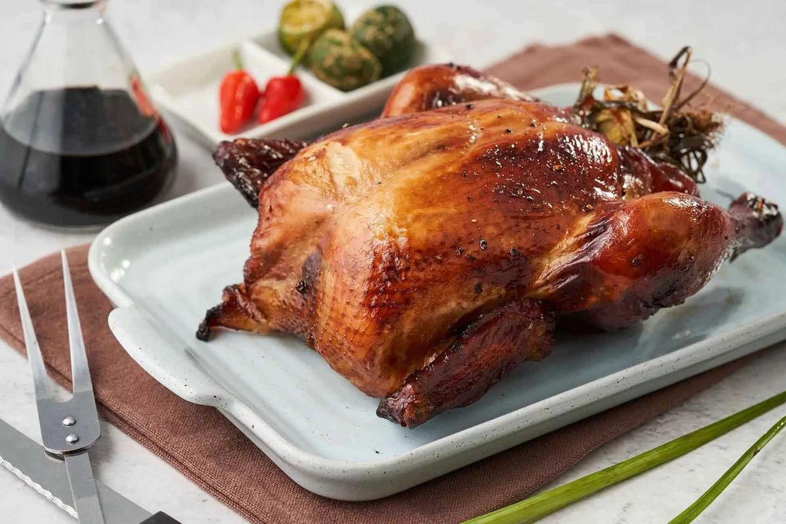

Lechon Manok is a roasted chicken that is coated with marinates such as soy sauce, bay leaves, and garlic. This recipe is best paired with homemade sauce. Lechon Manok became a household favorite by every Filipino. This recipe is usually made for parties and celebrations.